Leistungen
- Wohnungsbau
- Industriebau
Gewerbebau - Begegnung
Ausstellung - Bauten für Kinder
- Sanierung
Denkmalpflege - Sachverständigen Gutachten
Architekt - Bauingenieur - Sachverständiger
GRUNDBEGRIFFE DER BAUKKUNST
Bauwerke müssen so errichtet werden, dass sie standfest ( firmitas ),
zweckmäßig ( utilitas ) und schön ( venustas ) sind. Die Standfestigkeit
wird erreicht, wenn die Fundamente bis in den festen Untergrund
reichen und die Baustoffe sorgfältig und ohne Knauserei ausgesucht
werden. Bei einer zweckmäßigen Konstruktion sind die Räume fehlerfrei
und ohne Behinderung für die Benutzung angeordnet. Ein schönes
Bauwerk zeichnet sich durch ein angenehmes und gefälliges Aussehen
aus und besitzt ein ausgewogenes Verhältnis der Einzelteile zueinander.
Vitruv ( 1. Jahrh. vor Christus )
Architektur - Impressionen - Projekte
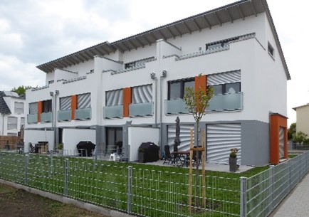
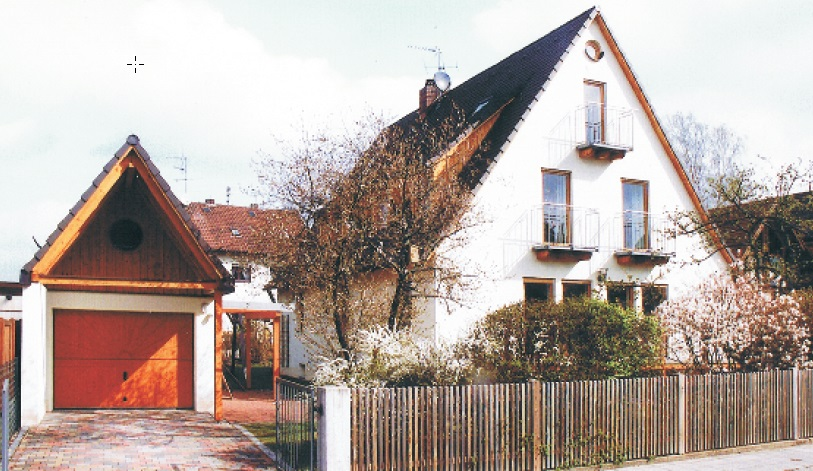
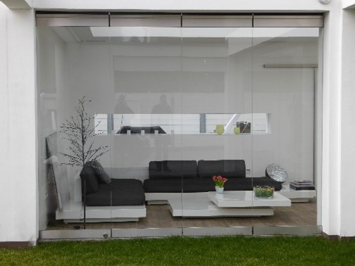
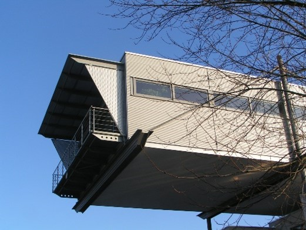
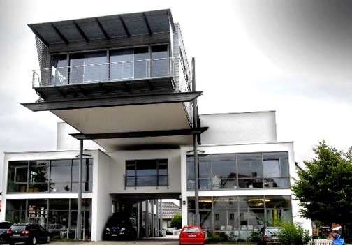
Gewerbe
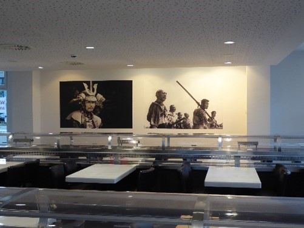
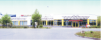
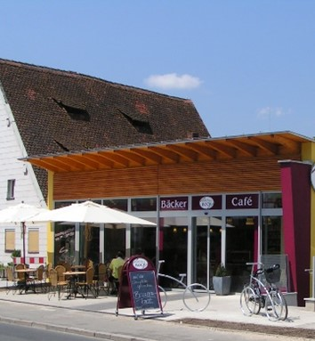
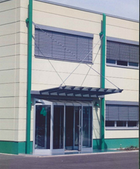
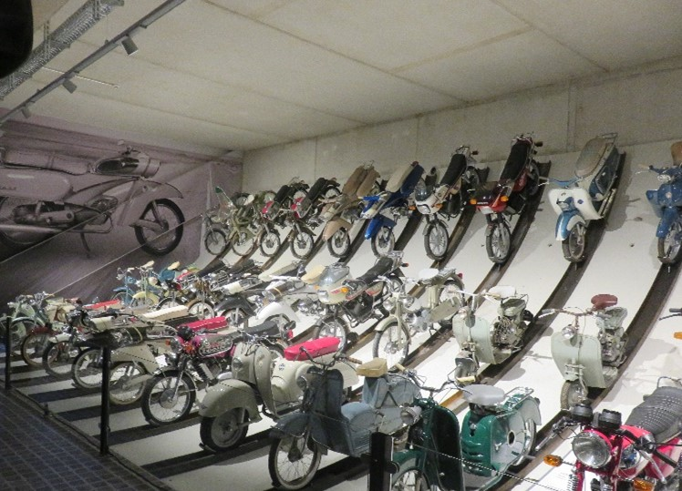
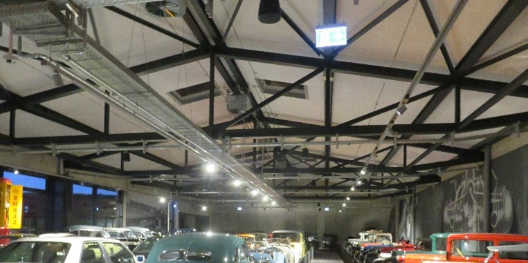
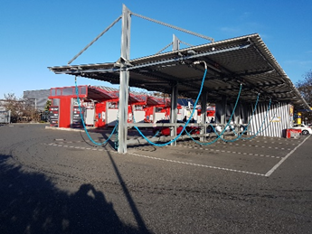
Ausstellung
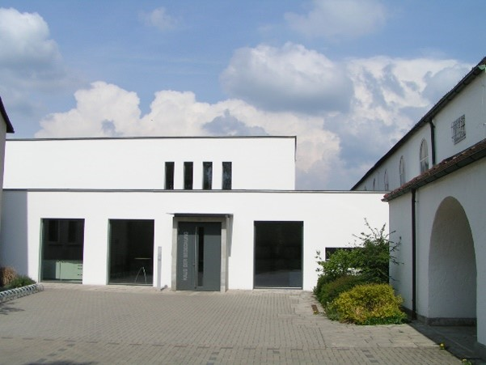
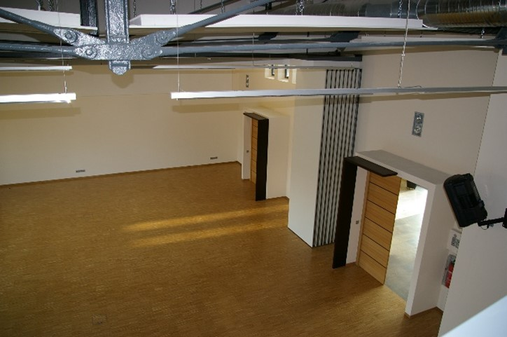
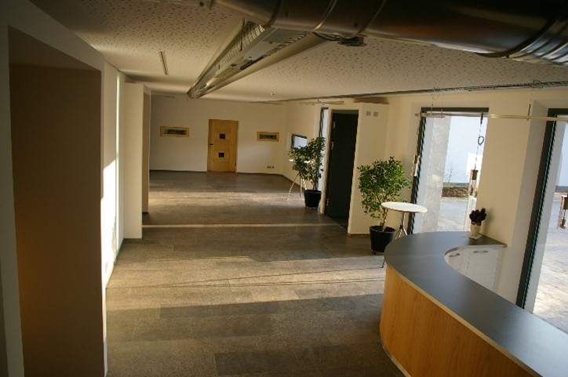
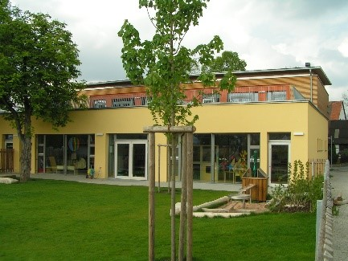
für Kinder
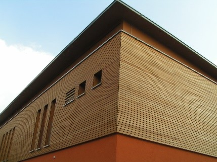
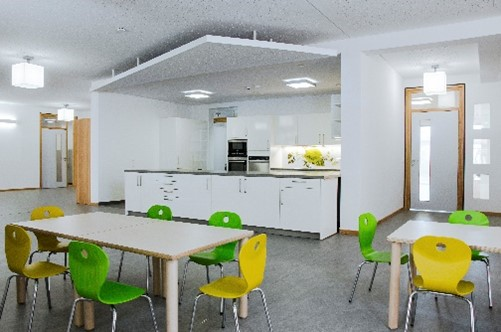
Denkmalpflege
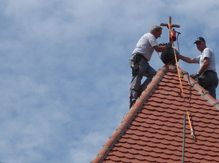
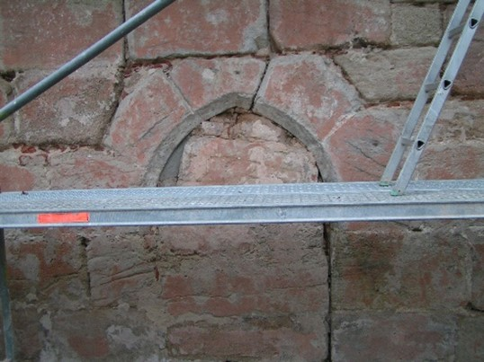
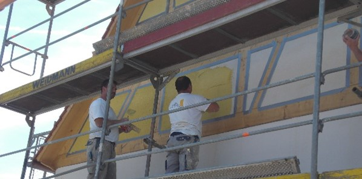
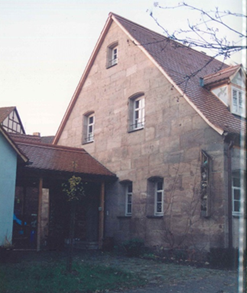
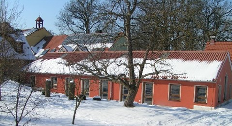